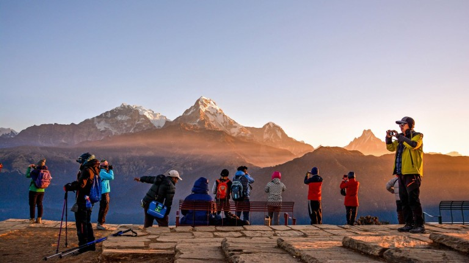
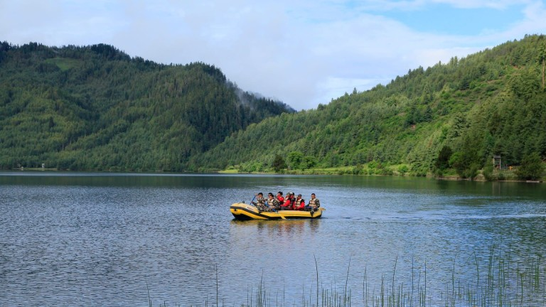
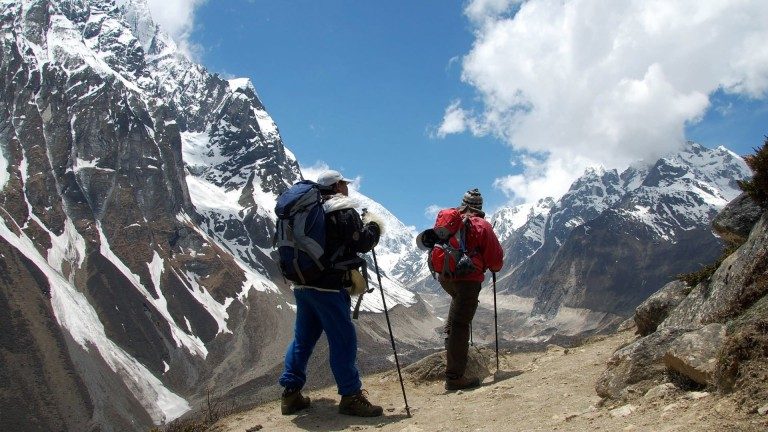
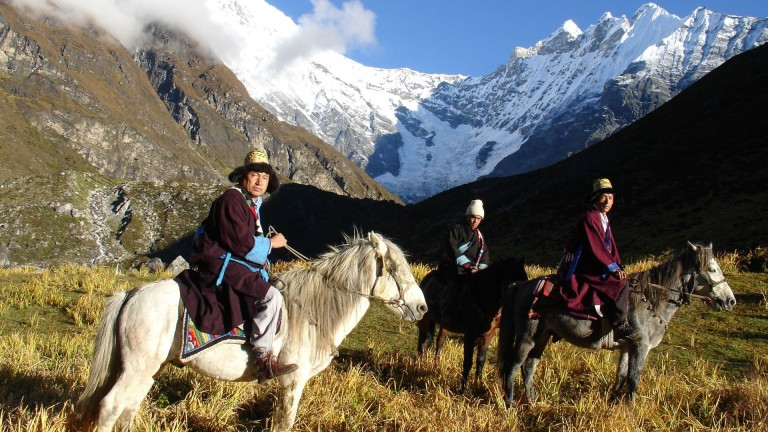

Everest Base Camp - Home of the World's Highest Peak
Everest Base Camp
Trek to the foot of Mount Everest (8,848m). Experience Sherpa culture,
breathtaking glaciers, and the thrill of standing at the gateway to the world's highest mountain.

Annapurna Circuit - Diverse Landscapes & Culture
Annapurna Circuit
Famous for its diverse scenery from subtropical forests to arid high-altitude
deserts. Cross Thorong La Pass (5,416m) and experience the majestic Annapurna massif.

RARA Lake - Nepal's deepest Lake
RARA Lake
More than 500 different kinds of flowers, 20 species of mammals and 214 species of birds can be
observed in the Rara National Park

Manaslu - Village Tours
Manaslu
You get to witness ancient cultures and the almost medieval lifestyle of the people as you trek up
north towards the peaks.

Langtang Valley - The Valley of Glaciers
Langtang Valley
Known as the "Valley of Glaciers," this trek offers close views of Langtang
Lirung, rich Tamang culture, and pristine alpine forests with diverse wildlife.